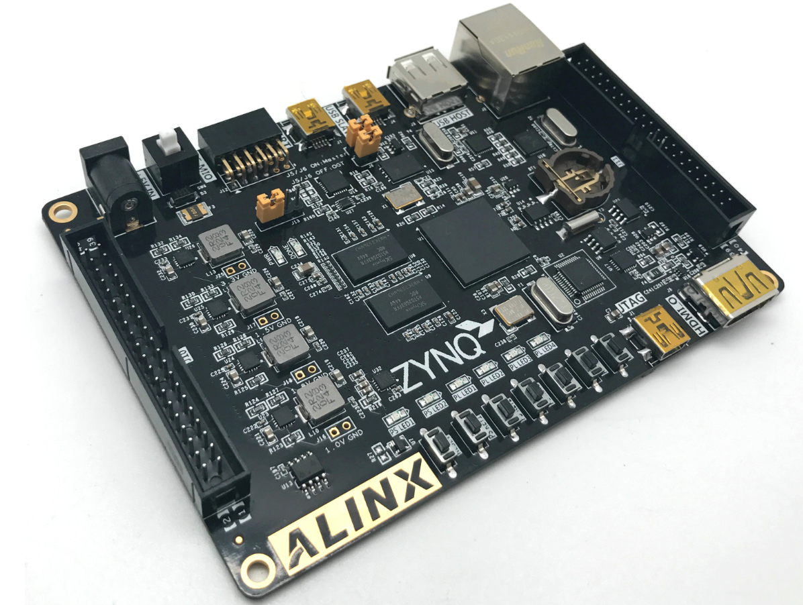
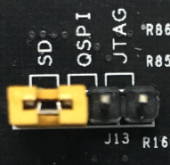

开发板硬件介绍#
黑金基于XILINX ZYNQ7000开发平台的开发板2016款正式发布了，型号为：AX7020 。此款开发平台是XILINX的Zynq7000 SOC 芯片的解决方案。它采用ARM+FPGA SOC技术将双核ARM Cortex-A9 和FPGA 可编程逻辑集成在一颗芯片上。它采用的是Xilinx的Zynq7000系列XC7Z020-2CLG400I作为核心处理器，在ARM和FPGA上分别具有丰富的硬件资源和外围接口。设计上坚持“精致、实用、简洁”的设计理念，它不但适合于软件工作人员的前期的软件验证，也适合于硬件开发人员的硬件设计即软硬件的系统协作，加快项目的开发进程。
图1-1 ZYNQ开发板全貌
简介#
在这里，对这款ZYNQ7000开发平台AX7020进行简单的功能介绍。
此款开发板使用的是Xilinx公司的Zynq7000系列的芯片，型号为XC7Z020-2CLG400I，400个引脚的FBGA封装。ZYNQ7000芯片可分成处理器系统部分Processor System（PS）和可编程逻辑部分Programmable Logic（PL）。在AX7020开发板上，ZYNQ7000的PS部分和PL部分都搭载了丰富的外部接口和设备，方便用户的使用和功能验证。另外开发板上集成了Xilinx USB Cable下载器电路，用户只要用一个USB线就可以对开发板进行下载和调试。图1-2为整个AX7020整个系统的结构示意图：
图1-2 AX7020结构示意图
通过这个示意图，我们可以看到，我们这个开发平台所能含有的接口和功能。
+5V电源输入,最大2A电流保护;
Xilinx ARM+FPGA芯片Zynq-7000 XC7Z020-2CLG400I
两片大容量的4Gbit（共8Gbit）高速DDR3 SDRAM,可作为ZYNQ芯片数据的缓存，也可以作为操作系统运行的内存;
一片256Mbit的QSPI FLASH, 可用作ZYNQ芯片的系统文件和用户数据的存储;
一路10/100M/1000M以太网RJ-45接口, 可用于和电脑或其它网络设备进行以太网数据交换;
一路HDMI 图像视频输入输出接口, 能实现1080P的视频图像传输;
一路高速USB2.0 HOST接口, 可用于开发板连接鼠标、键盘和U盘等USB外设;
一路高速USB2.0 OTG接口, 用于和PC或USB设备的OTG通信;
一路USB Uart接口, 用于和PC或外部设备的串口通信;
一片的RTC实时时钟，配有电池座，电池的型号为CR1220。
一片IIC接口的EEPROM 24LC04;
6个用户发光二极管LED, 2个PS控制，4个PL控制;
7个按键，1个CPU复位按键，2个PS控制按键，4个PL控制按键;
板载一个33.333Mhz的有源晶振，给PS系统提供稳定的时钟源，一个50MHz的有源晶振，为PL逻辑提供额外的时钟;
2路40针的扩展口（2.54mm间距），用于扩展ZYNQ的PL部分的IO。可以接7寸TFT模块、摄像头模块和AD/DA模块等扩展模块;
一个12针的扩展口（2.54mm间距），用于扩展ZYNQ的PS系统的MIO;
一路USB JTAG口，通过USB线及板载的JTAG电路对ZYNQ系统进行调试和下载。
1路Micro SD卡座(开发板背面），用于存储操作系统镜像和文件系统。
结构尺寸#
开发板的尺寸为精简的130mm x 90mm,PCB采用8层板设计。板子四周有4个螺丝定位孔，用于固定开发板，定位孔的孔径为3.5mm(直径），资料中提供dxf结构图。

电源#
电源输入：开发板供电电压为DC5V，请使用开发板自带的电源,不要用其他规格的电源，以免损坏开发板。开发板上的电源设计示意图如下:
图3-1原理图中电源接口部分
开发板通过+5V供电,通过四路DC/DC电源芯片TLV62130RGT转化成+3.3V，+1.5V，+1.8V，+1.0V四路电源，每路输出电流可高达3A。通过一路LDO SPX3819M5-3-3产生VCCIO电源，VCCIO最要是针对ZYNQ的BANK35进行供电，通过更换其它的LDO芯片，使得BANK35的IO适应不同的电压标准。1.5V通过TI的TPS51200生成DDR3需要的VTT和VREF电压。各个电源分配的功能如下表所示：
电源 |
功能 |
|---|---|
+3.3V |
ZYNQ VCCIO, 以太网，串口，HDMI, RTC，FLASH, EEPROM以及SD card |
+1.8V |
ZYNQ 辅助电压, ZYNQ PLL, ZYNQ Bank501 VCCIO, 以太网，USB2.0 |
+1.0V |
ZYNQ,的核心电压 |
+1.5V |
DDR3, ZYNQ Bank502 |
VREF, VTT |
DDR3 |
VCCIO |
ZYNQ Bank35 |
因为ZYNQ的PS和PL部分的电源有上电顺序的要求，在电路设计中，我们已经按照ZYQN的电源要求设计，上电依次为1.0V-> 1.8V -> 1.5 V -> 3.3V -> VCCIO，图3-2为电源的电路设计：
图3-2 开发板的电源设计
我们在设计PCB的时候，采用8层PCB，预留了独立的电源层和GND层，使得整个开发板的电源，具有非常好的稳定性。在PCB板上我们预留了各个电源的测试点，以便用户确认板上的电压。
图 3-3 实物图中的电源测试点
ZYNQ7000#
开发板使用的是Xilinx公司的Zynq7000系列的芯片，型号为XC7Z020-2CLG400I。芯片的PS系统集成了两个ARM Cortex™-A9处理器，AMBA®互连，内部存储器，外部存储器接口和外设。这些外设主要包括USB总线接口，以太网接口，SD/SDIO接口，I2C总线接口，CAN总线接口，UART接口，GPIO等。PS可以独立运行并在上电或复位下启动。ZYNQ7000芯片的总体框图如图4-1所示

图4-1 ZYNQ7000芯片的总体框图
其中PS系统部分的主要参数如下：
基于ARM 双核CortexA9 的应用处理器
每个CPU 32KB 1级指令和数据缓存，512KB 2级缓存 2个CPU共享
片上boot ROM和256KB 片内RAM
外部存储接口，支持16/32 bit DDR2、DDR3接口
两个千兆网卡支持：发散-聚集DMA ，GMII，RGMII，SGMII接口
两个USB2.0 OTG接口，每个最多支持12节点
两个CAN2.0B总线接口
两个SD卡、SDIO、MMC兼容控制器
2个SPI，2个UARTs，2个I2C接口
4组32bit GPIO，54（32+22）作为PS系统IO，64连接到PL
PS内和PS到PL的高带宽连接
其中PL逻辑部分的主要参数如下：
逻辑单元Logic Cells：85K
查找表LUTs: 53,200
触发器(flip-flops): 106,400
乘法器18x25MACCs：220
Block RAM：4.9 Mb
两个AD转换器,可以测量片上电压、温度感应和高达17外部差分输入通道，1MBPS
XC7Z020-2CLG400I芯片为BGA封装，400个引脚，引脚间距为0.8mm。再次说明一下BGA管脚，当我们使用BGA封装的芯片以后，引脚名称变为由字母+数字的形式，比如E3，G3等等，因此我们在看原理图的时候，看到的字母+数字这种形式的，就是代表了BGA的引脚。图3.1为开发板所用的XC7Z020芯片实物图。
图4-2 XC7Z020芯片实物
JTAG接口#
首先我们来说AX7020开发板的JTAG调试接口, 在电路板上已经集成了JTAG的下载调试电路，所以用户无需购买额外的Xilinx下载器。只要一根USB线就能进行ZYNQ的开发和调试了。在AX7020开发板上通过一个FTDI的USB桥接芯片FT232HL实现PC的USB和ZYNQ的JTAG调试信号TCK,TDO,TMS,TDI进行数据通信。图4-3为开发板上JTAG口的原理图部分：

图4-3 原理图中JTAG接口部分
在AX7020开发板上，JTAG接口的形式是USB接口方式的，用户可以通过我们提供的USB线连接PC和JTAG接口进行ZYNQ的系统调试。
图4-4 JTAG接口实物图
FPGA供电系统#
接下来，我们说一下AX7020的电源设计部分。ZYNQ芯片的电源分PS系统部分和PL逻辑部分，两部分的电源分别是独立工作。PS系统部分的电源和PL逻辑部分的电源都有上电顺序，不正常的上电顺序可能会导致ARM系统和FPGA系统无法正常工作。
PS部分的电源有VCCPINT、VCCPAUX、VCCPLL和PS VCCO。VCCPINT为PS内核供电引脚，接1.0V;VCCPAUX为PS系统辅助供电引脚，接1.8V;VCCPLL为PS的内部时钟PLL的电源供电引脚，也接1.8V;PS VCCO为BANK的电压，包含VCCO_MIO0，VCCO_MIO1和VCCO_DDR，根据连接的外设不同，连接的电源电源也会不同，在AX7020开发板上，VCC_MIO0连接3.3V， VCCO_MIO1连接1.8V，VCCO_DDR连接1.5V。PS系统要求上电顺序分别为先VCCPINT供电，然后VCCPAUX和VCCPLL，最后为PS VCCO。断电的顺序则相反。
PL部分的电源有VCCINT, VCCBRAM, VCCAUX和 VCCO。VCCPINT为FPGA内核供电引脚，接1.0V;VCCBRAM为FPGA Block RAM的供电引脚;接1.0V;VCCAUX为FPGA辅助供电引脚, 接1.8V;VCCO为PL的各个BANK的电压，包含BANK13，BANK34，BANK35，在AX7020开发板上，BANK的电压连接3.3V。PL系统要求上电顺序分别为先VCCINT供电，再是VCCBRAM, 然后是VCCAUX，最后为VCCO。如果VCCINT和VCCBRAM的电压一样，可以同时上电。断电的顺序则相反。
ZYNQ启动配置#
AX7020开发平台支持三种启动模式。这三种启动模式分别是JTAG调试模式,QSPI FLASH和SD卡启动模式。ZYNQ702芯片上电后会检测响应MIO口的电平来决定那种启动模式。用户可以通过核心板上的J13的跳线来选择不同的启动模式。J13启动模式配置如下表4-1所示。
J13 |
跳帽位置 |
启动模式 |
|---|---|---|
 |
连接左边两个引脚 |
SD Card |
连接中间两个引脚 |
QSPI FLASH |
|
连接右边边两个引脚 |
JTAG |
表4-1 J13启动模式配置
时钟配置#
AX7020开发板上分别为PS系统和PL逻辑部分提供了有源时钟，是PS系统和PL逻辑可以单独工作。
PS系统时钟源#
ZYNQ芯片通过开发板上的X1晶振为PS部分提供33.333MHz的时钟输入。时钟的输入连接到ZYNQ芯片的BANK500的PS_CLK_500的管脚上。其原理图如图5-1所示：
图5-1 PS部分的有源晶振
图5-2为有源晶振实物图
图5-2 33.333Mhz有源晶振实物图
时钟引脚分配：
信号名称 |
ZYNQ引脚 |
|---|---|
PS_CLK_500 |
E7 |
PL系统时钟源#
AX7020开发板上提供了单端50MHz的PL系统时钟源，3.3V供电。晶振输出连接到FPGA的全局时钟(MRCC)，这个GCLK可以用来驱动FPGA内的用户逻辑电路。该时钟源的原理图如图5-3所示
图 5-3 PL系统时钟源
图5-4为有源晶振50MHz的实物图

图5-4 50Mhz有源晶振实物图
PL时钟引脚分配：
信号名称 |
ZYNQ引脚 |
|---|---|
PL_GCLK |
U18 |
PS端的外设#
因为ZYNQ是由ARM系统PS部分和FPGA逻辑PL部分组成，开发板上有些外设是连接到PS的IO上，有些外设是连接到开发板的PL的IO上。首先我们先对PS部分连接的外设做介绍。
QSPI Flash#
开发板配有一片256Mbit大小的Quad-SPI FLASH芯片，型号为W25Q256，它使用3.3V CMOS电压标准。由于QSPI FLASH的非易失特性，在使用中， 它可以作为系统的启动设备来存储系统的启动镜像。这些镜像主要包括FPGA的bit文件、ARM的应用程序代码以及其它的用户数据文件。QSPI FLASH的具体型号和相关参数见表6-1。
位号 |
芯片类型 |
容量 |
厂家 |
|---|---|---|---|
U6 |
W25Q256 |
32M Byte |
Winbond |
表6-1 QSPI Flash的型号和参数
QSPI FLASH连接到ZYNQ芯片的PS部分BANK500的GPIO口上，在系统设计中需要配置这些PS端的GPIO口功能为QSPI FLASH接口。为图6-1为QSPI Flash在硬件连接示意图。

图6-1 QSPI Flash连接示意图
配置芯片引脚分配：
信号名称 |
ZYNQ引脚名 |
ZYNQ引脚号 |
|---|---|---|
QSPI_CLK |
PS_MIO6_500 |
A5 |
QSPI_CS |
PS_MIO1_500 |
A7 |
QSPI_D0 |
PS_MIO2_500 |
B8 |
QSPI_D1 |
PS_MIO3_500 |
D6 |
QSPI_D2 |
PS_MIO4_500 |
B7 |
QSPI_D3 |
PS_MIO5_500 |
A6 |
DDR3 DRAM#
AX7020开发板上配有两个SK hynix(海力士）的4Gbit（512MB）的DDR3芯片(共计8Gbit),型号为H5TQ4G63AFR-PBC（兼容MT41J256M16RE-125）。DDR的总线宽度共为32bit。DDR3 SDRAM的最高运行速度可达533MHz(数据速率1066Mbps)。该DDR3存储系统直接连接到了ZYNQ处理系统（PS）的BANK 502的存储器接口上。DDR3 SDRAM的具体配置如下表6-1所示。
表6-1 DDR3 SDRAM配置
位号 |
芯片类型 |
容量 |
厂家 |
|---|---|---|---|
U8,U9 |
H5TQ4G63AFR-PBC |
256M x 16bit |
micron |
DDR3的硬件设计需要严格考虑信号完整性，我们在电路设计和PCB设计的时候已经充分考虑了匹配电阻/终端电阻,走线阻抗控制，走线等长控制， 保证DDR3的高速稳定的工作。
DDR3 DRAM的硬件连接示意图如图6-2所示:
图6-2 DDR3 DRAM原理图部分
图6-3为DDR3 DRAM实物图
图6-3 DDR3 DRAM实物图
DDR3 DRAM引脚分配：
信号名称 |
ZYNQ引脚名 |
ZYNQ引脚号 |
|---|---|---|
DDR3_DQS0_P |
PS_DDR_DQS_P0_502 |
C2 |
DDR3_DQS0_N |
PS_DDR_DQS_N0_502 |
B2 |
DDR3_DQS1_P |
PS_DDR_DQS_P1_502 |
G2 |
DDR3_DQS1_N |
PS_DDR_DQS_N1_502 |
F2 |
DDR3_DQS2_P |
PS_DDR_DQS_P2_502 |
R2 |
DDR3_DQS2_N |
PS_DDR_DQS_N2_502 |
T2 |
DDR3_DQS3_P |
PS_DDR_DQS_P3_502 |
W5 |
DDR3_DQS4_N |
PS_DDR_DQS_N3_502 |
W4 |
DDR3_DQ[0] |
PS_DDR_DQ0_502 |
C3 |
DDR3_DQ [1] |
PS_DDR_DQ1_502 |
B3 |
DDR3_DQ [2] |
PS_DDR_DQ2_502 |
A2 |
DDR3_DQ [3] |
PS_DDR_DQ3_502 |
A4 |
DDR3_DQ [4] |
PS_DDR_DQ4_502 |
D3 |
DDR3_DQ [5] |
PS_DDR_DQ5_502 |
D1 |
DDR3_DQ [6] |
PS_DDR_DQ6_502 |
C1 |
DDR3_DQ [7] |
PS_DDR_DQ7_502 |
E1 |
DDR3_DQ [8] |
PS_DDR_DQ8_502 |
E2 |
DDR3_DQ [9] |
PS_DDR_DQ9_502 |
E3 |
DDR3_DQ [10] |
PS_DDR_DQ10_502 |
G3 |
DDR3_DQ [11] |
PS_DDR_DQ11_502 |
H3 |
DDR3_DQ [12] |
PS_DDR_DQ12_502 |
J3 |
DDR3_DQ [13] |
PS_DDR_DQ13_502 |
H2 |
DDR3_DQ [14] |
PS_DDR_DQ14_502 |
H1 |
DDR3_DQ [15] |
PS_DDR_DQ15_502 |
J1 |
DDR3_DQ [16] |
PS_DDR_DQ16_502 |
P1 |
DDR3_DQ [17] |
PS_DDR_DQ17_502 |
P3 |
DDR3_DQ [18] |
PS_DDR_DQ18_502 |
R3 |
DDR3_DQ [19] |
PS_DDR_DQ19_502 |
R1 |
DDR3_DQ [20] |
PS_DDR_DQ20_502 |
T4 |
DDR3_DQ [21] |
PS_DDR_DQ21_502 |
U4 |
DDR3_DQ [22] |
PS_DDR_DQ22_502 |
U2 |
DDR3_DQ [23] |
PS_DDR_DQ23_502 |
U3 |
DDR3_DQ [24] |
PS_DDR_DQ24_502 |
V1 |
DDR3_DQ [25] |
PS_DDR_DQ25_502 |
Y3 |
DDR3_DQ [26] |
PS_DDR_DQ26_502 |
W1 |
DDR3_DQ [27] |
PS_DDR_DQ27_502 |
Y4 |
DDR3_DQ [28] |
PS_DDR_DQ28_502 |
Y2 |
DDR3_DQ [29] |
PS_DDR_DQ29_502 |
W3 |
DDR3_DQ [30] |
PS_DDR_DQ30_502 |
V2 |
DDR3_DQ [31] |
PS_DDR_DQ31_502 |
V3 |
DDR3_DM0 |
PS_DDR_DM0_502 |
A1 |
DDR3_DM1 |
PS_DDR_DM1_502 |
F1 |
DDR3_DM2 |
PS_DDR_DM2_502 |
T1 |
DDR3_DM3 |
PS_DDR_DM3_502 |
Y1 |
DDR3_A[0] |
PS_DDR_A0_502 |
N2 |
DDR3_A[1] |
PS_DDR_A1_502 |
K2 |
DDR3_A[2] |
PS_DDR_A2_502 |
M3 |
DDR3_A[3] |
PS_DDR_A3_502 |
K3 |
DDR3_A[4] |
PS_DDR_A4_502 |
M4 |
DDR3_A[5] |
PS_DDR_A5_502 |
L1 |
DDR3_A[6] |
PS_DDR_A6_502 |
L4 |
DDR3_A[7] |
PS_DDR_A7_502 |
K4 |
DDR3_A[8] |
PS_DDR_A8_502 |
K1 |
DDR3_A[9] |
PS_DDR_A9_502 |
J4 |
DDR3_A[10] |
PS_DDR_A10_502 |
F5 |
DDR3_A[11] |
PS_DDR_A11_502 |
G4 |
DDR3_A[12] |
PS_DDR_A12_502 |
E4 |
DDR3_A[13] |
PS_DDR_A13_502 |
D4 |
DDR3_A[14] |
PS_DDR_A14_502 |
F4 |
DDR3_BA[0] |
PS_DDR_BA0_502 |
L5 |
DDR3_BA[1] |
PS_DDR_BA1_502 |
R4 |
DDR3_BA[2] |
PS_DDR_BA2_502 |
J5 |
DDR3_S0 |
PS_DDR_CS_B_502 |
N1 |
DDR3_RAS |
PS_DDR_RAS_B_502 |
P4 |
DDR3_CAS |
PS_DDR_CAS_B_502 |
P5 |
DDR3_WE |
PS_DDR_WE_B_502 |
M5 |
DDR3_ODT |
PS_DDR_ODT_502 |
N5 |
DDR3_RESET |
PS_DDR_DRST_B_502 |
B4 |
DDR3_CLK_P |
PS_DDR_CKP_502 |
L2 |
DDR3_CLK_N |
PS_DDR_CKN_502 |
M2 |
DDR3_CKE |
PS_DDR_CKE_502 |
N3 |
千兆以太网接口#
AX7020开发板上通过Realtek RTL8211E-VL以太网PHY芯片用户提供网络通信服务。以太网PHY芯片是连接到ZYNQ的PS端BANK501的GPIO接口上。RTL8211E-VL芯片支持10/100/1000 Mbps网络传输速率，通过RGMII接口跟Zynq7000 PS 系统的MAC层进行数据通信。RTL8211E-VL支持ＭDI/MDX自适应，各种速度自适应，Master/Slave自适应，支持MDIO总线进行PHY的寄存器管理。
RTL8211E-VL上电会检测一些特定的IO的电平状态，从而确定自己的工作模式。表6-2 描述了GPHY芯片上电之后的默认设定信息。
配置Pin脚 |
说明 |
配置值 |
|---|---|---|
PHYAD[2:0] |
MDIO/MDC 模式的PHY地址 |
PHY Address 为 001 |
SELRGV |
RGMII 1.8V或1.5V电平选择 |
1.8V |
AN[1:0] |
自协商配置 |
(10/100/1000M)自适应 |
RX Delay |
RX时钟2ns延时 |
延时 |
TX Delay |
TX时钟2ns延时 |
延时 |
表6-2 PHY芯片默认配置值
当网络连接到千兆以太网时，FPGA和PHY芯片RTL8211E-VL的数据传输时通过RGMII总线通信，传输时钟为125Mhz，数据在时钟的上升沿和下降样采样。
当网络连接到百兆以太网时，FPGA和PHY芯片RTL8211E-VL的数据传输时通过RMII总线通信，传输时钟为25Mhz。数据在时钟的上升沿和下降样采样。
图6-4为ZYNQ与以太网PHY芯片连接示意图:
图6-4 FPGA与PHY连接示意图
图6-5为以太网PHY芯片的实物图
图6-5 以太网PHY芯片实物图
以太网引脚分配如下：
信号名称 |
ZYNQ引脚名 |
ZYNQ引脚号 |
备注 |
|---|---|---|---|
ETH_GCLK |
PS_MIO16_501 |
A19 |
RGMII 发送时钟 |
ETH_TXD0 |
PS_MIO17_501 |
E14 |
发送数据bit０ |
ETH_TXD1 |
PS_MIO18_501 |
B18 |
发送数据bit1 |
ETH_TXD2 |
PS_MIO19_501 |
D10 |
发送数据bit2 |
ETH_TXD3 |
PS_MIO20_501 |
A17 |
发送数据bit3 |
ETH_TXCTL |
PS_MIO21_501 |
F14 |
发送使能信号 |
ETH_RXCK |
PS_MIO22_501 |
B17 |
RGMII接收时钟 |
ETH_RXD0 |
PS_MIO23_501 |
D11 |
接收数据Bit0 |
ETH_RXD1 |
PS_MIO24_501 |
A16 |
接收数据Bit1 |
ETH_RXD2 |
PS_MIO25_501 |
F15 |
接收数据Bit2 |
ETH_RXD3 |
PS_MIO26_501 |
A15 |
接收数据Bit3 |
ETH_RXCTL |
PS_MIO27_501 |
D13 |
接 收数据有效信号 |
ETH_MDC |
PS_MIO52_501 |
C10 |
MDIO管理时钟 |
ETH_MDIO |
PS_MIO53_501 |
C11 |
MDIO管理数据 |
USB2.0#
AX7020使用的USB2.0收发器是一个1.8V的，高速的支持ULPI标准接口的USB3320C-EZK。ZYNQ的USB总线接口和USB3320C-EZK收发器相连接，实现高速的USB2.0 Host模式和Slave模式的数据通信。USB3320C的USB的数据和控制信号连接到ZYNQ芯片PS端的BANK501的IO口上，一个24MHz的晶振为USB3320C提供系统时钟。
开发板上为用户提供了两个USB接口,一个是Host USB口，一个是Slave USB口。分别为扁型USB接口(USB Type A) 和微型USB接口(Micro USB), 方便用户连接不同的USB外设。用户可以通过开发板上的J5，J6的跳线实现Host和Slave的切换。表6-3为模式切换说明：
表6-3 USB接口模式切换说明
J5, J6状态 |
USB模式 |
说明 |
|---|---|---|
J5和J6安装跳线帽 |
HOST 模式 |
开发板作为主设备，USB口 连接鼠标，键盘，USB等从外设 |
J5 和J6不安装跳线帽 |
Slave 模式 |
开发 板作为从设备，USB口连接电脑 |
ZYNQ处理器和USB3320C-EZK芯片连接的示意图如6-6所示：
图6-6 Zynq7000和USB芯片间连接示意图
图6-7为USB2.0部分的实物图，U11为USB3320C，J3为Host USB接口, J4为Slave USB接口。跳线帽J5和J6用于Host和Slave模式的选择。
图6-7 USB2.0部分的实物图
USB2.0引脚分配：
信号名称 |
ZYNQ 引脚名 |
ZY NQ引脚号 |
备注 |
|---|---|---|---|
OTG_DATA4 |
PS_MIO28_501 |
C16 |
USB数据Bit4 |
OTG_DIR |
PS_MIO29_501 |
C13 |
USB数据方向信号 |
OTG_STP |
PS_MIO30_501 |
C15 |
USB停止信号 |
OTG_NXT |
PS_MIO31_501 |
E16 |
USB下一数据信号 |
OTG_DATA0 |
PS_MIO32_501 |
A14 |
USB数据Bit0 |
OTG_DATA1 |
PS_MIO33_501 |
D15 |
USB数据Bit1 |
OTG_DATA2 |
PS_MIO34_501 |
A12 |
USB数据Bit2 |
OTG_DATA3 |
PS_MIO35_501 |
F12 |
USB数据Bit3 |
OTG_CLK |
PS_MIO36_501 |
A11 |
USB时钟信号 |
OTG_DATA5 |
PS_MIO37_501 |
A10 |
USB数据Bit5 |
OTG_DATA6 |
PS_MIO38_501 |
E13 |
USB数据Bit6 |
OTG_DATA7 |
PS_MIO39_501 |
C18 |
USB数据Bit7 |
OTG_RESETN |
PS_MIO46_501 |
D16 |
USB复位信号 |
USB转串口#
AX7020开发板采用Silicon Labs CP2102GM的USB转UART芯片, USB接口采用Micro USB接口，用户可以用一根Micro USB线连接到PC上进行串口通信。
UART的TX/RX信号与ZYNQ EPP 的PS BANK501的信号相连，因为该BANK的VCCMIO设置为1.8V，但CP2102GM的数据电平为3.3V, 我们这里通过TXS0102DCUR电平转换芯片来连接。CP2102GM和ZYNQ连接的示意图如图6-8所示：
图6-8 CP2102GM连接示意图
图6-9为USB转串口的实物图
图6-9 USB转串口实物图
ZYNQ串口引脚分配：
信号名称 |
ZYNQ 引脚名 |
ZY NQ引脚号 |
备注 |
|---|---|---|---|
UART_TX |
PS_MIO48_501 |
B12 |
Uart数据输出 |
UART_RX |
PS_MIO49_501 |
C12 |
Uart数据输入 |
Silicon Labs为主机PC提供了虚拟COM端口（VCP）驱动程序。这些驱动程序允许CP2102GM USB-UART桥接设备在通信应用软件（例如，TeraTerm或超级终端）显示为一个COM端口。VCP设备驱动程序必须在PC主机与AX7020开发板板建立通信前进行安装。
SD卡槽#
AX7020开发板包含了一个Micro型的SD卡接口，以提供用户访问SD卡存储器，用于存储ZYNQ芯片的BOOT程序，Linux操作系统内核, 文件系统以及其它的用户数据文件。
SDIO信号与ZYNQ的PS BANK501的IO信号相连，因为该BANK的VCCMIO设置为1.8V，但SD卡的数据电平为3.3V, 我们这里通过TXS02612电平转换器来连接。Zynq7000 PS和SD卡连接器的原理图如图6-10所示。
图6-10 SD卡连接示意图
SD卡槽在开发板的背面，图6-11 SD卡槽实物图
图6-11 SD卡槽实物图
SD卡槽引脚分配
信号名称 |
ZYNQ 引脚名 |
ZY NQ引脚号 |
备注 |
|---|---|---|---|
SD_CLK |
PS_MIO40 |
D14 |
SD时钟信号 |
SD_CMD |
PS_MIO41 |
C17 |
SD命令信号 |
SD_D0 |
PS_MIO42 |
E12 |
SD数据Data0 |
SD_D1 |
PS_MIO43 |
A9 |
SD数据Data1 |
SD_D2 |
PS_MIO44 |
F13 |
SD数据Data2 |
SD_D3 |
PS_MIO45 |
B15 |
SD数据Data3 |
SD_CD |
PS_MIO47 |
B14 |
SD卡插入信号 |
PS PMOD连接器#
AX7020开发板预留了一个12针2.54mm间距的PMOD接口(J12)用于连接PS BANK500的IO和外部模块或电路。因为BANK500的IO是3.3V标准的，所以连接的外部设备和电路的信号也需要3.3V电平标准。 PMOD连接器的原理图如图6-12所示
图6-12 PMOD连接器原理图
图6-13 为PS PMOD连接器的实物图
图6-13 PS PMOD连接器的实物图
PS PMOD连接器的引脚分配
PMOD 管脚 |
信号名称 |
ZYNQ引脚名 |
ZYNQ引脚号 |
|---|---|---|---|
PIN1 |
PMOD_IO0 |
PS_MIO11_500 |
C6 |
PIN2 |
PMOD_IO2 |
PS_MIO9_500 |
B5 |
PIN3 |
PMOD_IO3 |
PS_MIO15_500 |
C8 |
PIN4 |
PMOD_IO4 |
PS_MIO7_500 |
D8 |
PIN5 |
GND |
||
PIN6 |
+3.3V |
||
PIN7 |
PMOD_IO1 |
PS_MIO10_500 |
E9 |
PIN8 |
PMOD_IO6 |
PS_MIO8_500 |
D5 |
PIN9 |
PMOD_IO7 |
PS_MIO14_500 |
C5 |
PIN10 |
PMOD_IO5 |
PS_MIO12_500 |
D9 |
PIN11 |
GND |
||
PIN12 |
+3.3V |
用户LED#
AX7020开发板上，PS部分的BANK500 IO上连接了2个LED发光二极管，用户可以使用这两个LED灯来调试程序。当BANK500 IO电压为高时，LED灯熄灭，当BANK500 IO电压为低时，LED会被点亮。ZYNQ BANK500 IO和LED灯连接的示意图如图6-14所示：
图6-14 Zynq-7000和LED灯连接示意图
图6-15 为PS的LED灯实物图
图6-15 PS的LED灯实物图
PS LED灯的引脚分配
信号名称 |
ZYNQ 引脚名 |
ZYNQ 引脚号 |
备注 |
|---|---|---|---|
MIO0_LED |
PS_MIO0_500 |
E6 |
PS LED1灯 |
MIO13_LED |
PS_MIO13_500 |
E8 |
PS LED2灯 |
用户按键#
AX7020开发板上，PS部分的BANK501 IO上连接了2个用户按键，用户可以使用这两个用户按键来测试输入信号和中断触发。设计中按键按下，输入到ZYNQ BANK501 IO上的信号电压为低，没有按下时，信号为高。 ZYNQ BANK501 IO和按键连接的示意图如图6-16所示：
图6-16 Zynq-7000和按键连接示意图
图6-17 为PS的按键实物图
图6-17 PS的按键实物图
PS LED灯的引脚分配
信号名称 |
ZYNQ 引脚名 |
ZY NQ引脚号 |
备注 |
|---|---|---|---|
MIO_KEY1 |
PS_MIO50_501 |
B13 |
PS用户按键KEY1 |
MIO_KEY2 |
PS_MIO51_501 |
B9 |
PS用户按键KEY2 |
PL端的外设#
下面我们再对PL部分（FPGA逻辑部分）连接的外设做一下介绍。
HDMI 接口#
HDMI，全称为高清晰度多媒体视频输出接口。AX7020开发板上通过FPGA的差分IO直接连接到HDMI接口的差分信号和时钟，在FPGA内部实现HMDI信号的差分转并行再进行编解码，实现DMI数字视频输入和输出的传输解决方案，最高支持1080P@60Hz的输入和输出的功能。
HDMI的信号连接到ZYNQ的PL部分的BANK34上，图6-1-1为HDMI设计的原理图，当开发板作为HDMI显示设备时（HDMI IN），HDMI信号作为输入，HPD(hot plug detect)信号作为输出。当开发板作为HDMI主设备（HDMI OUT）时，则相反。
图7-1为HDMI设计的原理图
开发板在作为HDMI主设备（HDMI OUT）时,需要提供给HDMI显示设备一个+5V的电源。电源输出控制电路如图7-2所示
图7-2 HDMI 5V输出电路
另外HMDI主设备会通过IIC总线读取HDMI显示设备的EDID设备信息。FPGA的管脚电平是3.3V,但HDMI的电平是+5V, 这里我们需要电平转换芯片GTL2002D来连接。IIC的转换电路如图7-3所示

图7-3 GTL2002D电平转换电路
图7-4 为HDMI接口的实物图
图7-4 HDMI接口的实物图
HDMI接口的引脚分配
信号名称 |
ZYNQ引脚名 |
ZY NQ引脚号 |
备注 |
|---|---|---|---|
HDMI_CLK_P |
IO_L13P_T2_MRCC_34 |
N18 |
HDMI时钟信号正 |
HDMI_CLK_N |
IO_L13N_T2_MRCC_34 |
P19 |
HDMI时钟信号负 |
HDMI_D0_P |
IO_L16P_T2_34 |
V20 |
HDMI数据0正 |
HDMI_D0_N |
IO_L16N_T2_34 |
W20 |
HDMI数据0负 |
HDMI_D1_P |
IO_L15P_T2_DQS_34 |
T20 |
HDMI数据1正 |
HDMI_D1_N |
IO_L15N_T2_DQS_34 |
U20 |
HDMI数据1负 |
HDMI_D2_P |
IO_L14P_T2_SRCC_34 |
N20 |
HDMI数据2正 |
HDMI_D2_N |
IO_L14N_T2_SRCC_34 |
P20 |
HDMI数据2负 |
HDMI_SCL |
IO_L20N_T3_34 |
R18 |
HDMI IIC时钟 |
HDMI_SDA |
IO_L19P_T2_34 |
R16 |
HDMI IIC数据 |
HDMI_CEC |
IO_L17P_T2_34 |
Y18 |
HDMI遥控器信号 |
HDMI_HPD |
IO_L17N_T2_34 |
Y19 |
HDMI热插拔检测信号 |
HDMI_OUT_EN |
IO_L18P_T2_34 |
V16 |
HDMI电源输出控制 |
EEPROM 24LC04#
AX7020开发板板载了一片EEPROM，型号为24LC04,容量为：4Kbit（2*256*8bit），由2个256byte的block组成,通过IIC总线进行通信。板载EEPROM就是为了学习IIC总线的通信方式。EEPROM的I2C信号连接的ZYNQ PL端的BANK34 IO口上。图7-5为EEPROM的原理图
图7-5 EEPROM原理图部分
图7-6为EEPROM实物图
图7-6 EEPROM实物图
EEPROM引脚分配：
信号名称 |
ZYNQ引脚名 |
ZYN Q引脚号 |
备注 |
|---|---|---|---|
EEPROM_I2C_SCL |
IO_25_34 |
T19 |
IIC时钟信号 |
EEPROM_I2C_SDA |
IO_L12N_T1_34 |
U19 |
IIC数据信号 |
实时时钟 DS1302#
开发板板载了一片实时时钟RTC芯片，型号DS1302，他的功能是提供到2099年内的日历功能，年月日时分秒还有星期。如果系统中需要时间的话，那么RTC就需要涉及到产品中。他外部需要接一个32.768KHz的无源时钟，提供精确的时钟源给时钟芯片，这样才能让RTC可以准确的提供时钟信息给产品。同时为了产品掉电以后，实时时钟还可以正常运行，一般需要另外配一个电池给时钟芯片供电，图6-3-1中为BT1为电池座，我们将纽扣电池（型号CR1220，电压为3V）放入以后，当系统掉电池，纽扣电池还可以给DS1302供电，这样，不管产品是否供电，DS1302都会正常运行，不会间断，可以提供持续不断的时间信息。RTC的接口信号也是连接到ZYNQ PL端的BANK34和BANK35 IO口上。图7-7为DS1302原理图
图7-7 DS1302原理图
图7-8为DS1302实物图
图7-8 DS1302实物图
DS1302接口引脚分配：
信号名称 |
ZYNQ引脚名 |
ZYNQ 引脚号 |
备注 |
|---|---|---|---|
RTC _SCLK |
IO_0_34 |
R19 |
RTC的时钟信号 |
RTC_RESET |
IO_L 22N_T3_AD7N_35 |
L15 |
RTC的复位信号 |
RTC _DATA |
IO_L 22P_T3_AD7P_35 |
L14 |
RTC的数据信号 |
扩展口J10#
扩展口J10为40管脚的2.54mm的双排连接器，为用户扩展更多的外设和接口，目前ALINX黑金提供的模块有：ADDA模块，液晶屏模块，千兆以太网模块，音频输入输出模块，矩阵键盘模块，500W双目视觉摄像头模块。扩展口上包含5V电源1路，3.3V电源2路，地3路，IO口34路。IO口的信号连接到ZYNQ PL的BANK35和BANK35上，电平默认为3.3V，扩展口J10的部分IO可以通过更换开发板上电源芯片(SPX3819M5-3-3)改变IO的电平。切勿直接跟5V设备直接连接，以免烧坏FPGA。如果要接5V设备，需要接电平转换芯片。
在扩展口和FPGA连接之间串联了33欧姆的排阻，用于保护FPGA以免外界电压或电流过高造成损坏。PCB设计上P和N的走线使用差分走线，控制差分阻抗为100欧姆。扩展口(J10)的电路如图7-9所示：
图7-9 J10扩展口原理图
图7-10为J10扩展口实物图，扩展口的Pin1，Pin2和Pin39，Pin40已经在板上标示出。
图7-10 J10扩展口实物图
J10扩展口引脚分配
J10管脚 |
信号名称 |
ZYNQ引脚名 |
ZYNQ引脚号 |
|---|---|---|---|
PIN1 |
GND |
||
PIN2 |
+5V |
||
PIN3 |
EX_IO1_1N |
IO_L22N_T3_34 |
W19 |
PIN4 |
EX_IO1_1P |
IO_L22P_T3_34 |
W18 |
PIN5 |
EX_IO1_2N |
IO_L6N_T0_34 |
R14 |
PIN6 |
EX_IO1_2P |
IO_L6P_T0_34 |
P14 |
PIN7 |
EX_IO1_3N |
IO_L7N_T1_34 |
Y17 |
PIN8 |
EX_IO1_3P |
IO_L7P_T1_34 |
Y16 |
PIN9 |
EX_IO1_4N |
IO_L10N_T1_34 |
W15 |
PIN10 |
EX_IO1_4P |
IO_L10P_T1_34 |
V15 |
PIN11 |
EX_IO1_5N |
IO_L8N_T1_34 |
Y14 |
PIN12 |
EX_IO1_5P |
IO_L8P_T1_34 |
W14 |
PIN13 |
EX_IO1_6N |
IO_L23N_T3_34 |
P18 |
PIN14 |
EX_IO1_6P |
IO_L23P_T3_34 |
N17 |
PIN15 |
EX_IO1_7N |
IO_L11N_T1_34 |
U15 |
PIN16 |
EX_IO1_7P |
IO_L11P_T1_34 |
U14 |
PIN17 |
EX_IO1_8N |
IO_L24N_T3_34 |
P16 |
PIN18 |
EX_IO1_8P |
IO_L24P_T3_34 |
P15 |
PIN19 |
EX_IO1_9N |
IO_L9N _T1_34 |
U17 |
PIN20 |
EX_IO1_9P |
IO_L9P_T1_34 |
T16 |
PIN21 |
EX_IO1_10N |
IO_L21_N_T3_34 |
V18 |
PIN22 |
EX_IO1_10P |
IO_L21_P_T3_34 |
V17 |
PIN23 |
EX_IO1_11N |
IO_L5N_T0_34 |
T15 |
PIN24 |
EX_IO1_11P |
IO_L5P_T0_34 |
T14 |
PIN25 |
EX_IO1_12N |
IO_L3N_T0_34 |
V13 |
PIN26 |
EX_IO1_12P |
IO_L3P_T0_34 |
U13 |
PIN27 |
EX_IO1_13N |
IO_L4N_T0_34 |
W13 |
PIN28 |
EX_IO1_13P |
IO_L4P_T0_34 |
V12 |
PIN29 |
EX_IO1_14N |
IO_L2N_T0_34 |
U12 |
PIN30 |
EX_IO1_14P |
IO_L2P_T0_34 |
T12 |
PIN31 |
EX_IO1_15N |
IO_L1N_T0_34 |
T10 |
PIN32 |
EX_IO1_15P |
IO_L1P_T0_34 |
T11 |
PIN33 |
EX_IO1_16N |
IO_L2N_T0_35 |
A20 |
PIN34 |
EX_IO1_16P |
IO_L2P_T0_35 |
B19 |
PIN35 |
EX_IO1_17N |
IO_L1N_T0_35 |
B20 |
PIN36 |
EX_IO1_17P |
IO_L1P_T0_35 |
C20 |
PIN37 |
GND |
||
PIN38 |
GND |
||
PIN39 |
+3.3V |
||
PIN40 |
+3.3V |
扩展口J11#
扩展口J11也为40管脚的2.54mm的双排连接器，为用户扩展更多的外设和接口，目前ALINX黑金提供的模块有：ADDA模块，液晶屏模块，千兆以太网模块，音频输入输出模块，矩阵键盘模块，500W双目视觉摄像头模块。扩展口上包含5V电源1路，3.3V电源2路，地3路，IO口34路。IO口的信号连接到ZYNQ PL的BANK35上，电平默认为3.3V，扩展口J11的全部IO可以通过更换开发板上电源芯片(SPX3819M5-3-3)改变IO的电平。切勿直接跟5V设备直接连接，以免烧坏FPGA。如果要接5V设备，需要接电平转换芯片。
在扩展口和FPGA连接之间串联了33欧姆的排阻，用于保护FPGA以免外界电压或电流过高造成损坏，PCB设计上P和N的走线使用差分走线，控制差分阻抗为100欧姆。扩展口(J11)的电路如图7-11所示
图7-11 J11扩展口原理图
图7-12为J11扩展口实物图，扩展口的Pin1，Pin2和Pin39，Pin40已经在板上标示出。
图7-12 J11扩展口实物图
J11扩展口引脚分配
J11管脚 |
信号名称 |
ZYNQ引脚名 |
ZYNQ引脚号 |
|---|---|---|---|
PIN1 |
GND |
||
PIN2 |
+5V |
||
PIN3 |
EX_IO2_1N |
IO_L6N_T0_35 |
F17 |
PIN4 |
EX_IO2_1P |
IO_L6P_T0_35 |
F16 |
PIN5 |
EX_IO2_2N |
IO_L15N_T2_35 |
F20 |
PIN6 |
EX_IO2_2P |
IO_L15P_T2_35 |
F19 |
PIN7 |
EX_IO2_3N |
IO_L18N_T2_35 |
G20 |
PIN8 |
EX_IO2_3P |
IO_L18P_T2_35 |
G19 |
PIN9 |
EX_IO2_4N |
IO_L14N_T2_35 |
H18 |
PIN10 |
EX_IO2_4P |
IO_L14P_T2_35 |
J18 |
PIN11 |
EX_IO2_5N |
IO_L9N_T1_35 |
L20 |
PIN12 |
EX_IO2_5P |
IO_L9P_T1_35 |
L19 |
PIN13 |
EX_IO2_6N |
IO_L7N_T1_35 |
M20 |
PIN14 |
EX_IO2_6P |
IO_L7P_T1_35 |
M19 |
PIN15 |
EX_IO2_7N |
IO_L12N_T1_35 |
K18 |
PIN16 |
EX_IO2_7P |
IO_L12P_T1_35 |
K17 |
PIN17 |
EX_IO2_8N |
IO_L10N_T1_35 |
J19 |
PIN18 |
EX_IO2_8P |
IO_L10P_T1_35 |
K19 |
PIN19 |
EX_IO2_9N |
IO_L17N_T2_35 |
H20 |
PIN20 |
EX_IO2_9P |
IO_L17P_T2_35 |
J20 |
PIN21 |
EX_IO2_10N |
IO_L11N_T1_35 |
L17 |
PIN22 |
EX_IO2_10P |
IO_L11P_T1_35 |
L16 |
PIN23 |
EX_IO2_11N |
IO_L8N_T1_35 |
M18 |
PIN24 |
EX_IO2_11P |
IO_L8P_T1_35 |
M17 |
PIN25 |
EX_IO2_12N |
IO_L4N_T0_35 |
D20 |
PIN26 |
EX_IO2_12P |
IO_L4P_T0_35 |
D19 |
PIN27 |
EX_IO2_13N |
IO_L5N_T0_35 |
E19 |
PIN28 |
EX_IO2_13P |
IO_L5P_T0_35 |
E18 |
PIN29 |
EX_IO2_14N |
IO_L16N_T2_35 |
G18 |
PIN30 |
EX_IO2_14P |
IO_L16P_T2_35 |
G17 |
PIN31 |
EX_IO2_15N |
IO_L13N_T2_35 |
H17 |
PIN32 |
EX_IO2_15P |
IO_L13P_T2_35 |
H16 |
PIN33 |
EX_IO2_16N |
IO_L19N_T3_35 |
G15 |
PIN34 |
EX_IO2_16P |
IO_L19P_T3_35 |
H15 |
PIN35 |
EX_IO2_17N |
IO_L20N_T3_35 |
J14 |
PIN36 |
EX_IO2_17P |
IO_L20P_T3_35 |
K14 |
PIN37 |
GND |
||
PIN38 |
GND |
||
PIN39 |
+3.3V |
||
PIN40 |
+3.3V |
用户LED#
AX7020开发板的PL部分连接了4个LED发光二极管。4个用户LED部分的原理图如图6-6-1，LED灯的信号连接到PL部分BANK35的IO上。当PL部分BANK35的IO引脚输出为逻辑0时，LED会被点亮，出为逻辑1时，LED会被熄灭。
图7-13 PL用户LED原理图
图7-14为这四个LED实物图
图7-15 PL用户LED实物图
PL用户LED引脚分配：
信号名称 |
ZYNQ 引脚名 |
ZY NQ引脚号 |
备注 |
|---|---|---|---|
LED1 |
IO_L23P_T3_35 |
M14 |
PL用户LED1灯 |
LED2 |
IO_L23N_T3_35 |
M15 |
PL用户LED2灯 |
LED3 |
IO_L24P_T3_35 |
K16 |
PL用户LED3灯 |
LED4 |
IO_L24N_T3_35 |
J16 |
PL用户LED4灯 |
用户按键#
AX7020开发板的PL部分板载了4个用户按键(KEY1~KEY4),按键的信号连接到ZYNQ的BANK34和BANK35的IO上。按键都为低电平有效, 没有按下时，信号为高;按键按下时，信号为低。4个用户按键的原理图如图7-16所示
图7-16个用户按键原理图
图7-17为连接到PL的4个用户按键实物图
图7-17 4个PL用户按键实物图
按键引脚分配：
信号名称 |
ZYNQ 引脚名 |
Z YNQ引脚号 |
备注 |
|---|---|---|---|
KEY1 |
IO_L21P_T3_35 |
N15 |
PL用户按键1 |
KEY2 |
IO_L21N_T3_35 |
N16 |
PL用户按键2 |
KEY3 |
IO_L20P_T3_34 |
T17 |
PL用户按键3 |
KEY4 |
IO_L19N_T3_34 |
R17 |
PL用户按键4 |